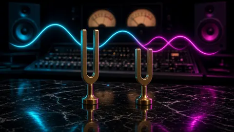
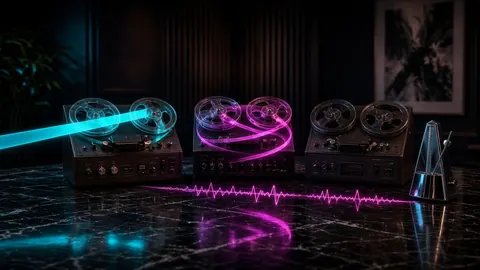
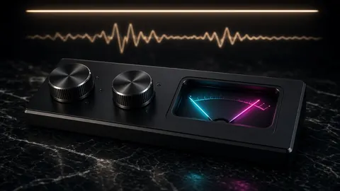
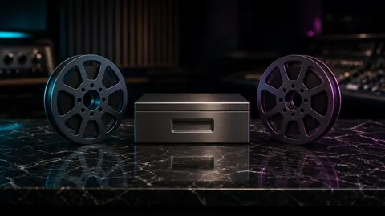
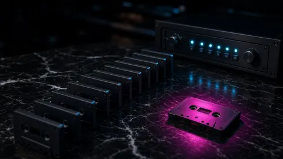
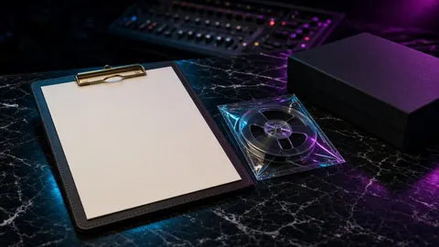
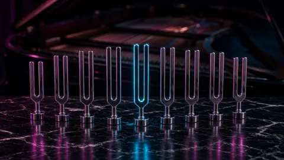
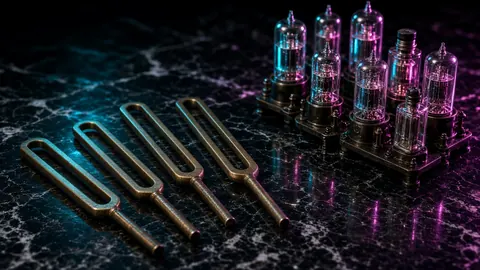
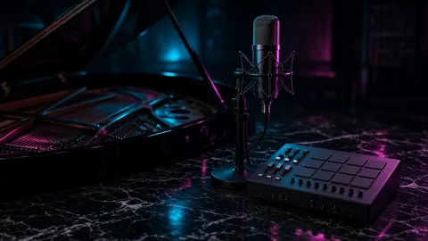

Lacquer · Topic · 14 essays
432 Hz, pitch & tempo
A 432 Hz retune is a precise operation with measurable side effects. Start with the math, then the workflow, then the history and the listening tests.
Retuning a finished master from A=440 to A=432 is a precise operation. Every frequency scales by 432/440 (0.981818, about −31.77 cents), and if the change is made by resampling, the file also gets 1.85% longer. The essays here start with that math and with the three different jobs people mean when they say “pitch it down”: resampling, pitch shifting and tempo change.
Then comes the practical side: what a retune does to LUFS and true peak, how to build a 432 alternate master and batch-retune a folder without touching the approved original, how other reference pitches such as 435 and 442 compare, and a release checklist. The history and rumor pieces check the dated record on concert pitch before A=440 and on the 432 conspiracy claims, and the listening-lab pieces show how to test 432 against 440 blind. Slowed, screwed and halftime prints close the path, because a slower file still needs a legal peak.

Pitch · 8 October 2026 · 12 minWhat 432 Hz actually changes in a finished master
Retuning a master from 440 to 432 Hz scales every frequency by 0.981818 (−31.77 cents) and, with resampling, adds 1.85% length. Measured on real renders.

Pitch · 8 October 2026 · 14 minResampling, pitch shifting, and tempo change are three different jobs
Resampling moves pitch and time together, pitch shifting rebuilds time, tempo change keeps pitch. Seven FFmpeg renders measured for pitch, BPM, and smearing.

Mastering · 8 October 2026 · 12 min432 Hz mastering: LUFS and true peak after a retune
A 432 retune barely moves LUFS, but resampling can turn hidden inter-sample peaks into real overs. Render in float, measure, then normalize in two passes.

Workflow · 8 October 2026 · 10 minA 432 alternate master should never cost you the original
Build a 432 Hz alternate master beside the approved 440 file: read-only source, exact-ratio render, names, notes, runtime and ISRC checks, and full-file QC.

Batch · 8 October 2026 · 11 minBatch retune a folder to 432 Hz without damaging a master
A safe batch workflow for retuning a folder to 432 Hz: preflight, read-only inputs, temp-file renders, exact per-source ratios, error logs, restartable runs.

Checklist · 8 October 2026 · 10 minBefore a 432 version ships: the release checklist
Before releasing a 432 Hz version: rights, the right source reference, a QC gate for clipping and true peak, runtime fixes, honest copy, an archive.

Reference · 8 October 2026 · 10 min432, 435, 442 and the reference pitch you actually started from
432, 435, 438, 442, and custom A4 references compared: exact ratios, cents, runtime and BPM changes, documented history, and why the source reference matters.

History · 8 October 2026 · 12 minConcert pitch before A=440: a history that never stood still
Before A=440, concert pitch ran from about 415 to 457 Hz. The dated record from Shore's 1711 fork to ISO 16, the temperature fights, and the 432 math.
- Rumor file · 8 October 2026 · 13 min
The 432 Hz conspiracy theories, checked against the record
Did the Nazis or the Rockefellers change music from 432 to 440 Hz? Where each 432 rumor started, what the dated record shows, and how to read health studies.
- Listening lab · 8 October 2026 · 12 min
How to run a 432 vs 440 listening test you can trust
432 Hz vs 440 Hz, tested fairly: level-match within 0.1 LU, switch at the same note, run a blind ABX round, and score it so placebo and loudness can't win.

Listening list · 8 October 2026 · 12 minWhich songs reveal a 432 Hz retune, and which hide it
The best songs to test 432 Hz have exposed vocals, sustained chords and piano tails. Dense mixes and drums hide it. A measured way to build a test set.
- ScrewAI · 21 August 2026 · 6 min
Screw tempo still needs a legal peak
Slowing a track for syrup aesthetics changes duration and crest, not true-peak law. A screwed render still needs ≤ −1.0 dBTP before upload.
- Tempo · 6 October 2026 · 5 min
Halftime still needs a legal peak
A half-time slowdown changes length and weight, not the true-peak ceiling. Meter the screwed file before it goes anywhere public.
- Workflow · 6 October 2026 · 4 min
When to slow the bounce
Slow the print when the record wants weight, not when the mix is unfinished. A halftime desk is for the bounce, then the meter.
More topics: Loudness & LUFS True peak, limiting & delivery Low end, 808s & mix dynamics Stem separation, sampling & privacy All essays